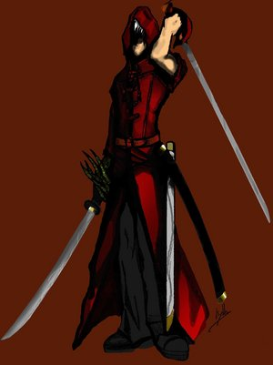

Forums galactiques > Assemblée Galactique : diplomatie officielle > [RP] Tombé du ciel
Pages : 1
| Link Respect diplomatique : 12  16/01 ETU 18:57 | Score : 9 Détails Ce soir la, il faisait froid, très froid. Des couples étaient assis sur des bancs. C’était calme... « c’était ». Les couples s’en allèrent. Le parc était vide. Les bancs se mirent à geler, les feuilles des arbres tombèrent en plein printemps, les lampadaires s’éteignaient.
Une lumière illumina le ciel d’une puissance incroyable. On put apercevoir une boule noire, enfin de loin on aurait dit une boule. De plus près c’était deux hommes qui se bataient a l’épée. Plus précisément au katana. Quand ils atterrirent, chacun forma sa fissure dans le sol. Ils levèrent la tète et le combat repartit de plus belle. En haut, en bas, partout ou ils pouvaient frapper, ils frappaient. Après une longue période (estimée à 200 ans). Un des deux hommes commença à faiblir. Il s’appelait Vincent Valentine. 50 ans plus tard les deux hommes étaient complètement morts. Mais UN allait être sauvé... Des lumières blanches jaillissaient dans une salle déjà blanche. Il était accroché solidement à un lit, lui aussi de couleur blanche. L’homme était avec une cape rouge et avec des cheveux noirs. Il ouvrit les yeux mais vit un peu trouble au début. Le temps que sa vu revienne il essaya de se détacher et il y arriva. A l’instant où les sangles ont étés décrochées, une alarme retentit dans tout le bâtiment. Il prit ses katanas qui étaient proches de lui, s’en arma et pris la direction de la sortit. Derrière la porte, il vit un homme en blouse blanche (le blanc devait être a la mode^^), il saisit un katana, et, sans que l’homme puisse réagir, il lui coupa la tète. Quand il rangea son katana dans son fourreau accroché au dos, il réalisa qu’il ne savait pas qui il était ni pourquoi il était là. Il était amnésique... Après avoir tué plusieurs hommes en blouse blanche il prit l’identité d’un dénommé Link. Étant donné qu’il ne savait plus son nom, il choisi celui d’un autre. Link fut sortit rapidement du bâtiment et il put lire sur une enseigne accrochée au mur : « Hôpital Des Rivières ». Il comprenait un peu mieux tout le blanc qu’il y avait dans le centre hospitalier. Il arriva devant un bâtiment de diffusion radio-galactique et se dit qu’il devait passer un message. Quand il ouvra la porte il y eu un vigile... – Que veux tu petit ? - Passer un message mon grand ! - T’as une émission ou un rendez-vous ? - Non mais si tu veux je peux te mettre mon petit poing dans ta grosse gueule, mon grand ! - MOUAHAHAHAHAHAHAH !!!!! Trop drôle !! Link n’apprécia pas l’humour de cette homme-baleine et mit son poing dans la figure du vigile. Celui-ci eu si mal qui tomba dans les pommes. Link put ainsi entrer dans le bâtiment de radio diffusion galactique. Il prit deux katanas, explosa les portes et tua les hommes qui diffusaient une émission débile. Il prit le micro et dit son message... Bonjour cher tous ! Je me souviens plus de rien et je ne sais pas si je vais retrouver la mémoire. Je n’ai nulle part où aller, nuls abris, nuls amis qui pourraient m’héberger, nul argent qui pourrais me sauver. Mais je sais que vous m’écoutez et si quelques uns d’entre vous pourrais m’aider, je leur serait très reconnaissant. J’ai affaire à faire donc je vais vous quit....... Un autre vigile coupa la ligne de radio diffusion. Devenu une routine, Link sortit son katana et coup la tète de l’autre homme... |
Pages : 1
Forums galactiques > Assemblée Galactique : diplomatie officielle > [RP] Tombé du ciel